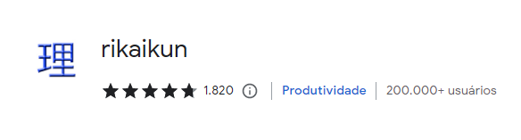
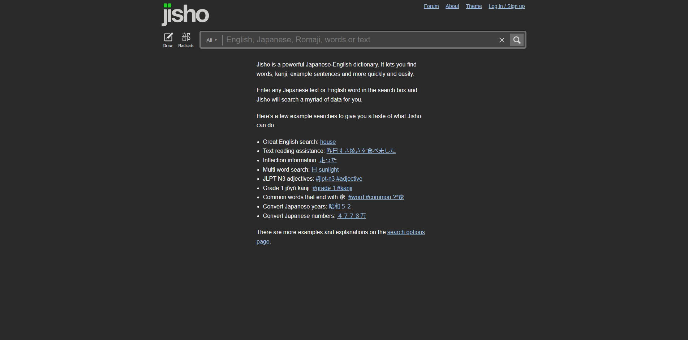
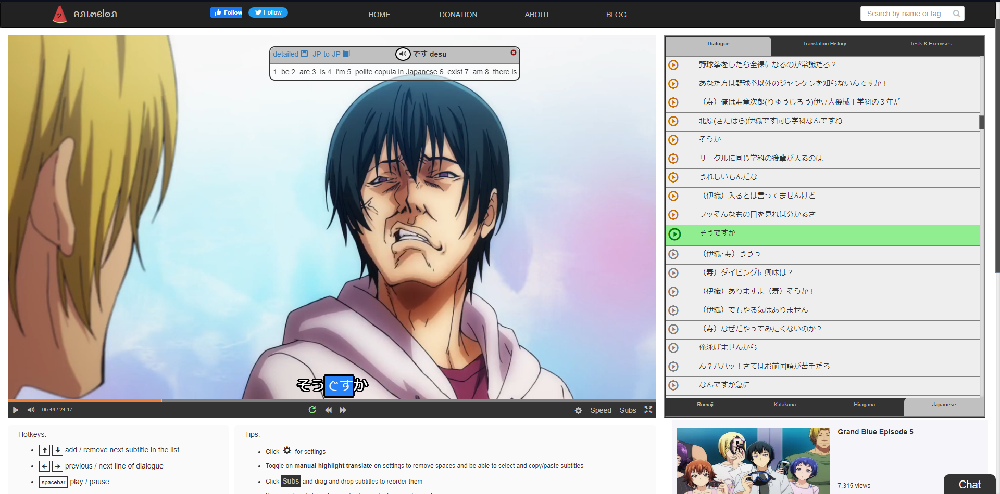
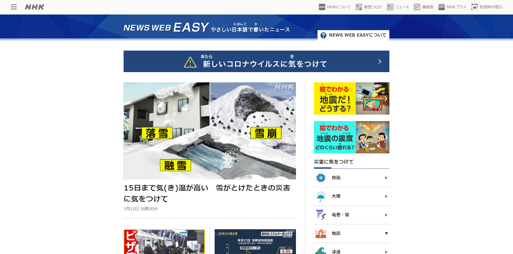
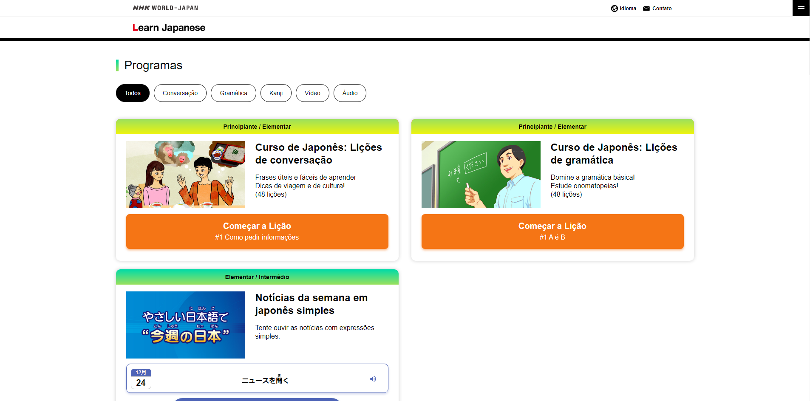
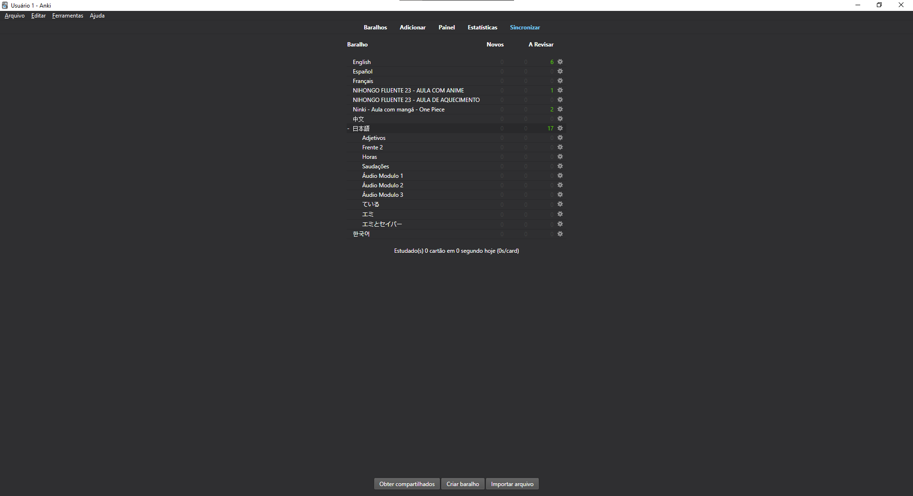

DICAS
Agora que você já sabe todo o hiragana e katakana, eu quero dar algumas dicas para facilitar seus estudose para começar, a primeira dica é sobre o tempo de estudo
- Tempo de estudo
- Extensões do navegador
- Sites para estudos de japonês
- Apps
- Bônus
No estudo de idiomas o mais importante é manter a constância, estudar um pouco todos os dias, mesmo que seja apenas 10 minutos, é melhor estudar 10 minutos todos os dia, do que 3-4 horas em 1 único dia. O motivo é por causa que você estará em contato diário com o idioma e isso é uma das coisas mais importantes. Mas se você ainda é jovem, está no colégio, tem muito tempo livre no dia, agarre essa o oportunidade e estudade o máximo que conseguir no dia, pois isso vai acelerar muito seu aprendizado. E lembre-se, o tempo sempre vai passar, continue estudnado constantemente.
O que faz as pessoas quererem fazer algo novo é a motivação, no entanto uma hora ela acaba, e quem deve vim em sequência é a disciplina, e é aí que chega a parte mais difícil do estudo, mas quando se passa por ela tudo se torna mais fácil. E porquê estou falando sobre isso?. Quando se trata de estudo de idiomas, a disciplina é muito importante, principalmente no japonês que é uma língua muito distante do português e acaba demorando mais para poder aprendê-la.
Assista os vídeos abaixo para entender melhor:
Agora vou recomendar algumas extensões de navegador para facilitar o seus estudos, recomendo que todos instalem em seus computadores.
1. IPA furigana
A primeira delas é a IPA furigana como o nome já mostra, ele serve para colocar os furigana nos kanji. O vídeo abaixo mostra como instalar a extensão.

2. Rikaikun
O próximo é o rikaikun, o meu favorito, a função dele é para mostrar a tradução (em inglês) da palavra em japonês com apenas o passar o mouse por cima delas.

Agora vamos falar da parte mais importante das dicas, mas recomendo usá-los depois de alguns meses de estudos, com exceção do dicionário então vamos começar com ele.
1. Jisho
Como o nome já explica, ele é um dicionário (辞書) mas fique atento que é de japonês para inglês e inglês para japonês. A parte boa desse site que é posivel pesquisar as palavras em inglês, japonês, romaji, desenhando o kajin e procurando pelos radicais.

2. Animes
O animelon é um site para assistir anime, mas o seu diferencial é que ele tem legenda em japonês e quando clica em alguma palavra é mostrado o seu significado em inglês.

3. Ler mangas
Agora vou passar 2 sites para ler manga em japones, no entando tem quer comprar os mangas mas tem uma forma de ler de graça algumas página. O primeiro é o ebookjapan, nesse site só da para criar uma conta e comprar mangas se você tiver um número de celular japonês mas dar para ler algumas páginas de graça sem ter contar. O outro é o cmoa, nesse dar para criar uma conta facilmente e ler de graça sem criar uma conta.
4. NHK para estudos
O NHK é uma empresa japonesa que tem 2 sites muito importantes para estudantes de japonês, o primeiro é o NHK news, nesse site contém partes de notícias escritar em japonês e é posivel colocar o furigana pelo próprio site para facilitar a leitura dos kanji. O segundo é o NHK learn japanese, nele se encontra conteúdos para o estudo de japonês do nível básico até o intermediário.


1. Anki
Vamos falar sobre o anki, ele é um app que simula os flashcards de uma forma digital. Muitas pessoas acham os flashcards muito chato, mas eu trato como um jogo, e considero até que divertido. Veja o vídeo abaixo para uma explicação de como baixar e usar.

2. HelloTalk
O HelloTalk é um app de celular que eu gosto muito pelo motivo de conseguir conversar com outras pessoas de outros países na língua que quiser. Esse app consiste em chat privados e salas de voz publicas em que não tem um limite de pessoas para entrar, mas tem o limite de 8 pessoas para falar ao mesmo tempo. Gosto bastante pois consigo treinar minha fala todos os dias.
3. Outros apps de estudos
Nesta seção gostaria de falar um pouco da minha opinião sobre apps de estudos de idiomas. Para mim apps de estudos como Duolingo, Busuu entre outros são bons, mas somente para pessoas que começaram agora e não tem noção alguma do idioma, mas para quem já estudou um pouco, e usando o japonês com exemplo, se vocês já sabe os alfabetos, já sabe frases básicas, conhece algumas palavras recomendo que não use esses apps, acho perca de tempo, ao menos que você seja uma pessoas muito ocupada e não tem muito tempo durante o dia para estudar eu recomendo que use, porque qualquer coisa é melhor que nada.
Colocar o teclado do pc e do celular em japonês
Essa dica é bom simples, coloque teclado dos seus dispositivos em japonês.